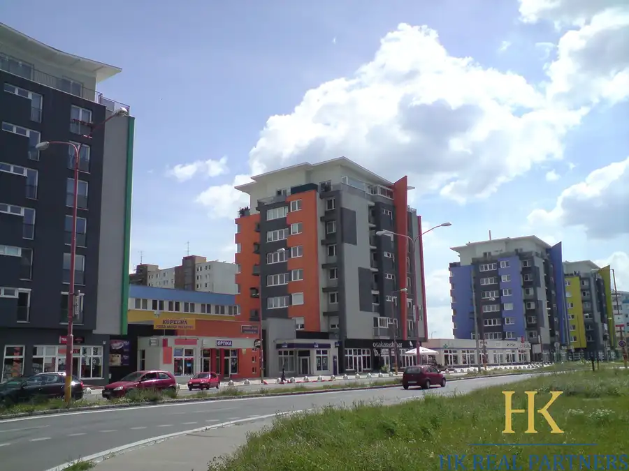
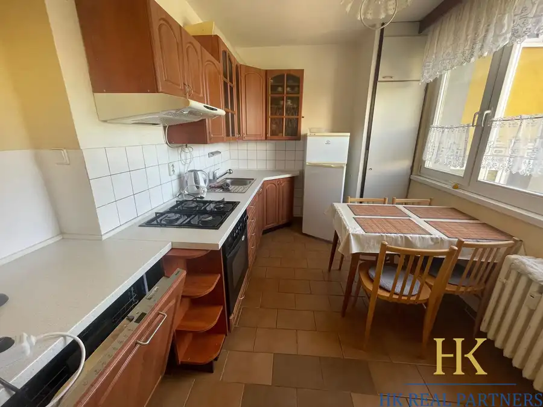
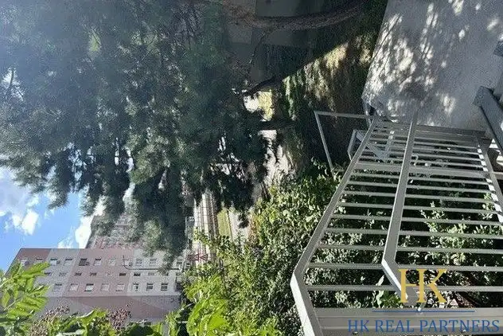

Prenájom priestranný 2 izbový byt, novostavba, s terasou, Malacky
Malacky
- Dispozícia2-izbový
- Plocha80 m²
- Poschodie1. z 1
- StavNovostavba
- VlastníctvoOsobné
- Energetická triedaB
O nehnuteľnosti
HK Real Partners Vám ponúka krásny 2 izbový moderný byt v novom bytovom dome, ulica Gen. M.R.Štefánika, Malacky. Nachádza sa na prízemí. Rozloha: 80 m2, plus terasa 15 m2. Kompletne moderne zariadený. Novým nábytkom na mieru. Všetko je nové, ešte nepoužívané. Veľa úložného priestoru. Byt je priestranný, svetlý. Hľadáte oázu pokoja uprostred mesta? Tento nadštandardný byt je orientovaný do tichého dvora Vám zabezpečí absolútny relax bez ruchu ulice.Dispozícia: vstupná chodba s úložným priestorom. Kuchyňa zariadená so spotrebičmi. Stôl so stoličkami. Sklokeramická varná doska, chladnička s mrazničkou. Riady Tescoma. Televízor v obývačke. Sedacia súprava rozkladacia. Kuchyňa samostatná. Obývačka priechodná so spálňou. V kúpeľni sprchový kút spolu s WC. Na terase sedenie stôl a stoličky. Upravený dvor, závlahové polievanie, kvety. K dispozícii stojan na bicykle. Veľmi Parkovanie pred domom na 2 autá v cene prenájmu. Voľný ihneď. Bez zvierat. Bezbarierový prístup. Platí sa nájom, depozit a provízia 440,-Eur . Výborná lokalita. Blízko železničná stanica, do centra blízko. Vybavenosť v okolí potraviny. Voľný ihneď.Cena: 890€, vrátane energií, internetu, KBTV, parkovania. Voľný ihneď.KONTAKT: 0903234033Mail kontakt: hana@hkreal.sk
Parametre
| Bezpečnosť | Bezpečnostné dvere |
|---|---|
| Cena vrátane energií | Áno |
| Doprava | MHD, Vlak, Cesta, Cyklistická infraštruktúra |
| Druh | 2 izbový byt |
| Dátum zverejnenia | 21. 7. 2026 |
| Energetický certifikát budovy | B |
| Podlažie | 1 |
| Počet izieb / miestností | 2 |
| Počet nadzemných podlaží | 1 |
| Počet spální | 2 |
| Počet vonkajších parkovacích miest | 1 |
| Prechodová izba | Áno |
| Rok kolaudácie | 2026 |
| Rok výstavby | 2025 |
| Stav nehnuteľnosti | Novostavba |
| Telekomunikácie | Internet, Káblová TV |
| Terás | 1 |
| Typ | Prenájom |
| Typ konštrukcie | Tehlová |
| Umiestnenie | Prízemie |
| Vlastníctvo | Osobné |
| Vybavenie | Terasa, Vonkajšie parkovacie miesto, Úschovňa bicyklov, Vyhradené parkovanie |
| Vybavenie objektu | Štandardné |
| Vykurovanie | Klimatizacia, Podlahové, Lokálne |
| Zariadenie | Zariadené kompletne |
| Úžitková plocha | 80 m² |
Kde to je


Mohlo by Vás zaujímať

BytNové9 175 000 €Predaj pekný 1 izbový byt, Podunajské Biskupice, s balkónom Podunajské Biskupice, Bratislava 1-izbový34.2 m²6. podlažie HK Real partners Vám ponúka 1 izbový byt, ulica Kazanská, Podunajské Biskupice, Bratislava II.Nachádza sa na 6. poschodí zo 7. S výťahom. S balkónom,…
BytNové9 1 050 €Prenájom 4 izbový byt, priestranný, Gallayova ulica, zariadený, Dúbravka, BA IV Dúbravka, Bratislava 4-izbový76 m²3. podlažie HK Real Partners Vám ponúka na prenájom priestranný 4 izbový byt, ulica na Gallayova, Dúbravka, Bratislava IV. Rozloha: 76 m2. S výťahom. S lodžiou.…
BytNové10 154 800 €Predaj útulnej garsónky, ulica Saratovská, po rekonštrukcii, Dúbravka, BA IV Dúbravka, Bratislava 27.5 m²5. podlažie HK Real Partners Vám ponúka exkluzívne na predaj garsónku, ulica Saratovská, Dúbravka, Bratislava IV. Rozloha: 27,5 m2. Nachádza sa na 5. poschodí z…